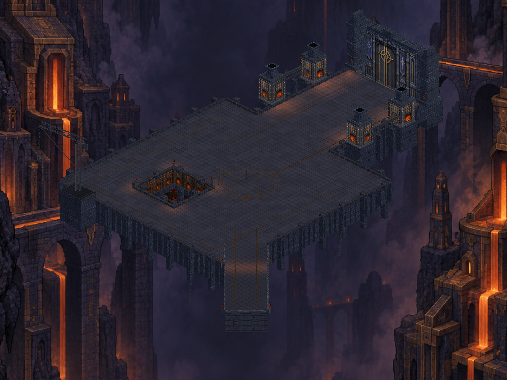
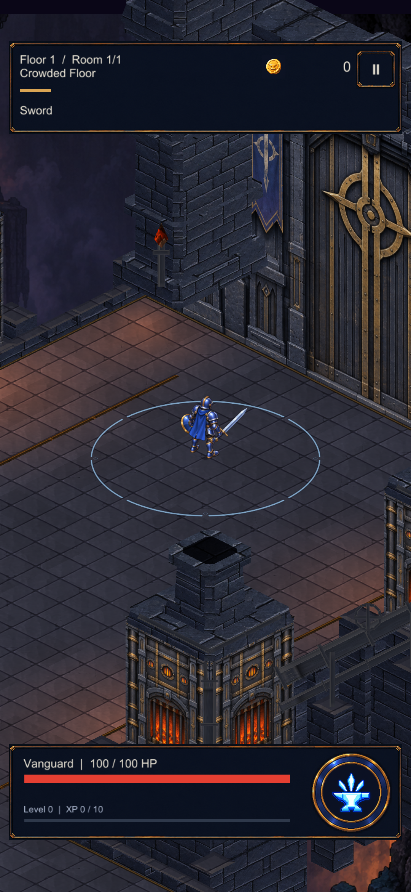
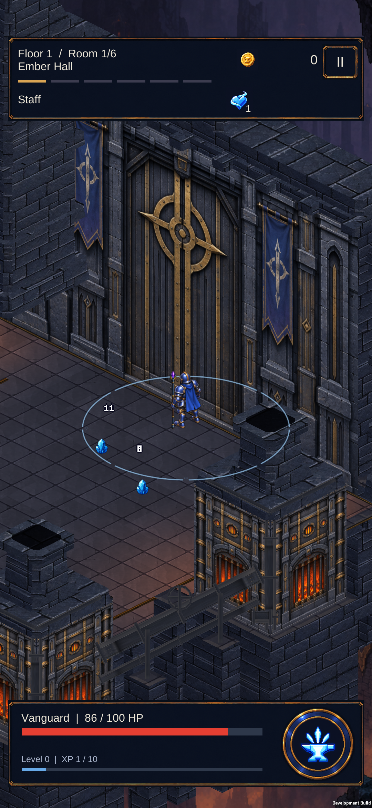

CRYPTFORGE / 24 EYLÜL 2026Kapı ve fırınlar · mimari hacim
Kademeli sütunlar, eğimli taçlar ve açık ağızlı bacalar. Mevcut oyunun izometrik yüzeylerine eklenen mimari parçalar; aşağıdaki görüntüler doğrudan Unity sahnesinden.

Oyun kamerası
Gerçek sahnenin 1080 × 2340 Unity çekimi; telefon ekran görüntüsü değildir.

Telefonda
Yeni sürüm S23'e yüklendi; bu görüntü gerçek cihazdan. Kayıtlar korundu.

Bu turda Blender veya yeni bir üretilmiş doku kullanılmadı. Mevcut taş ve demir malzemeleri korunarak şekiller geliştirildi. Sonraki sanat çalışmasında taş ölçeği, vinç ve mimari süslemeler hâlâ geliştirilebilir.